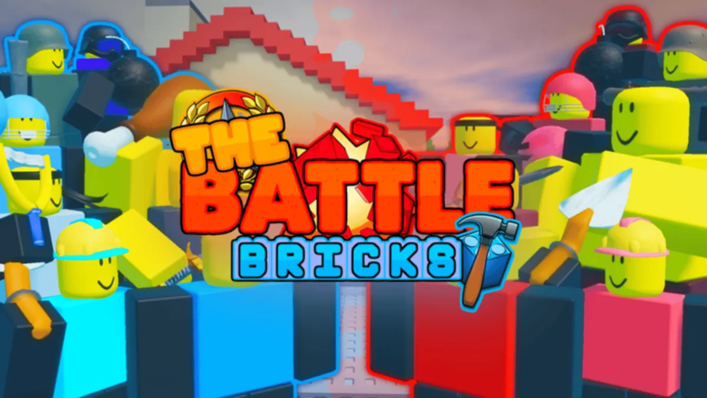
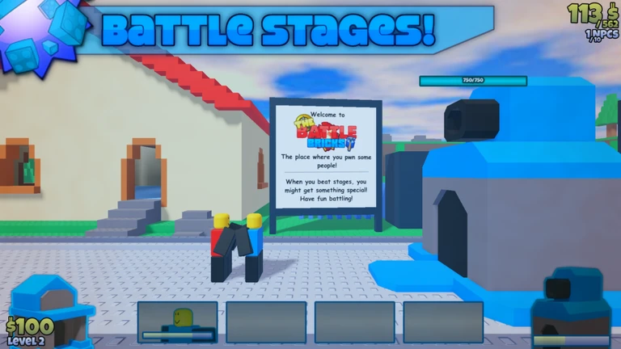
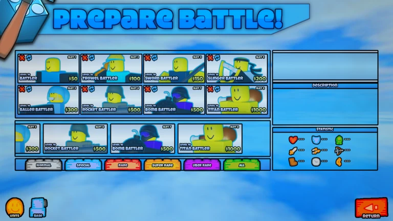
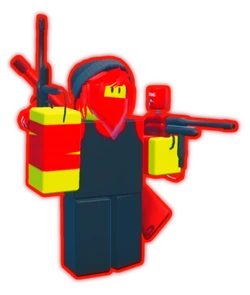
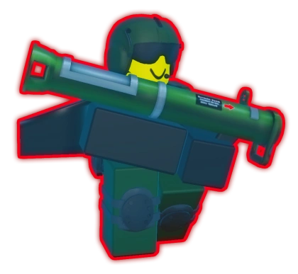
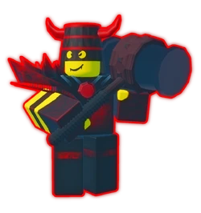
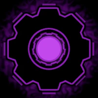

Hello! Welcome to my website where I talk about
my Top 5 Favorite Roblox Games!

The Battle Bricks is a singleplayer defense game made by a group named "Tumore".
In this game, we deploy units to fight against enemies and defend our base through many challenging stages.
The game is heavily based off of "The Battle Cats".

The way you fight is by sending out your own guys to fight for you while
the Red team also send out their guys to fight us. It is a fair and square match
between bases and teams. You can also upgrade your bank and activate your cannon
during the match in order to gain the higher advantage towards your enemy.

In here, you can change units in order to adjust to different levels in the game
and to beat different and unique enemies. You can also upgrade your units and base in order
to become stronger than the guys on the other end as they also become stronger.



These are the big guys that the Red team sends out in order to defeat us.
They are pretty tough and hard to beat when you don't know what you're doing
so you need to have a good strategy in order to beat them because they also have
their own unique abilities.

Some may think that secrets require a lot of digging in order to get a piece
of information, but in uncommon cases, a secret could just be hiding in plain sight.
Finding out the secrets would mean going deeper into unknown territories however.
Overall, this game is super fun (despite being almost similar to "The Battle Cats")
because of its unique enemies that will make you think more critically
in order for you to defeat and destroy their bases.